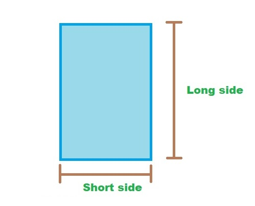

ASTM E1300-12a Standard Practice for Determining Load Resistance of Glass in Buildings

| Glass type = | ||
| Glass type Allow Stress = | Mpa | |
| Glass thickness = | mm. | |
| Length of Unsupported Side = | m. | |
| Wind load = | pa | |
| Max. Bending Stress = | MPa | |
| Check Bending Stress = |
|
|
| Young's mod. of glass = | 71 | MPa |
| Maximum Deflection = | mm. | |
| Allow def. = L / 60 or < 20 = | mm. | |
| Definition check = |
|
|